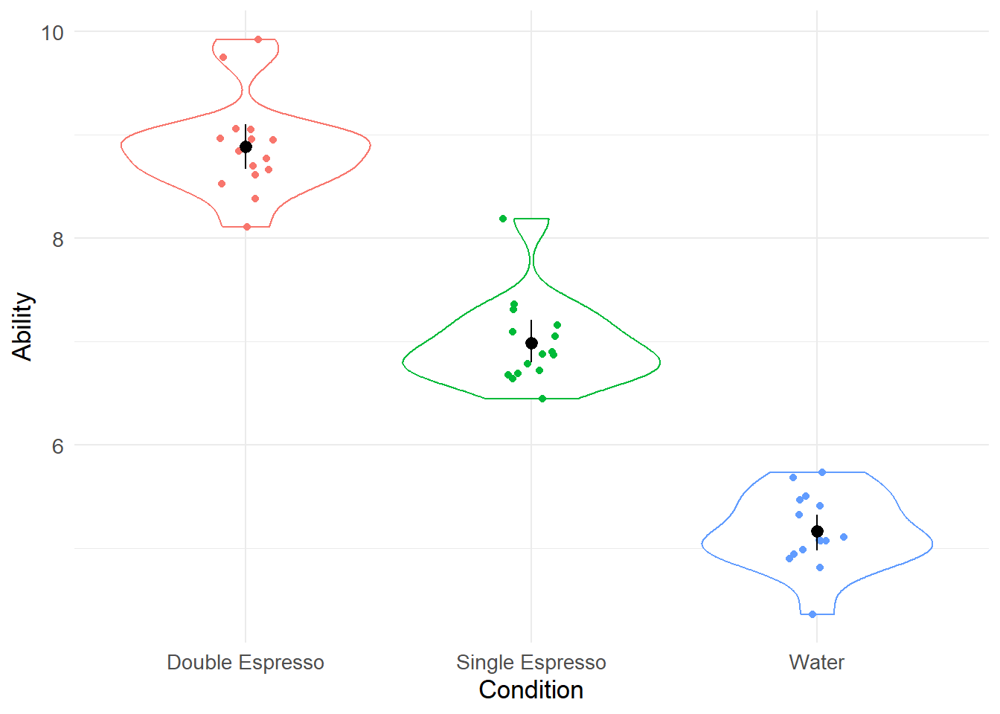
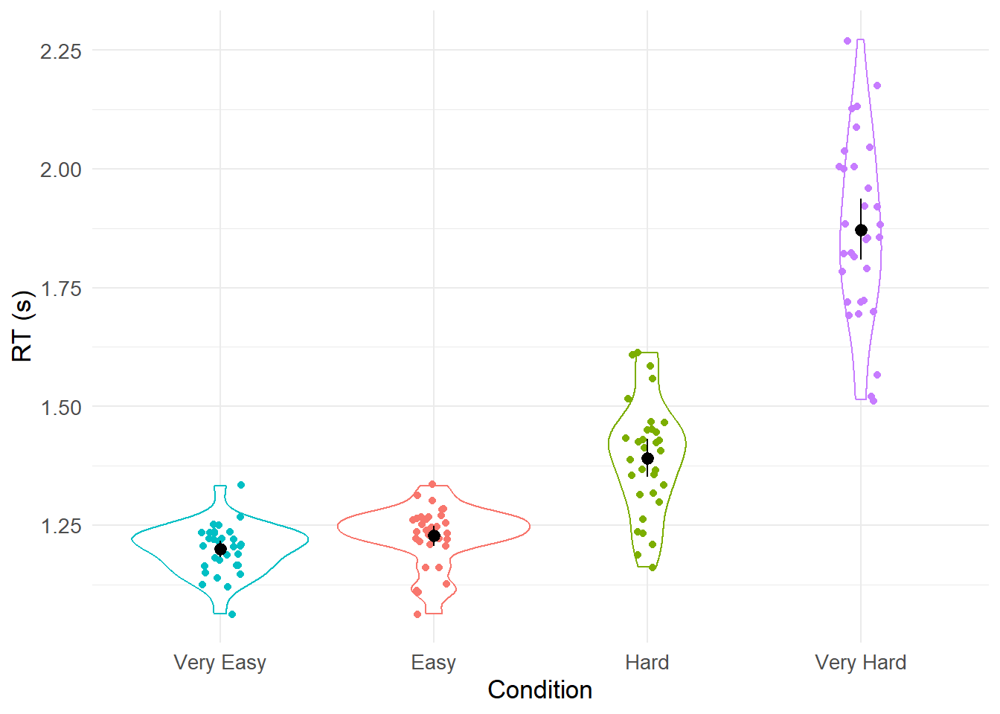
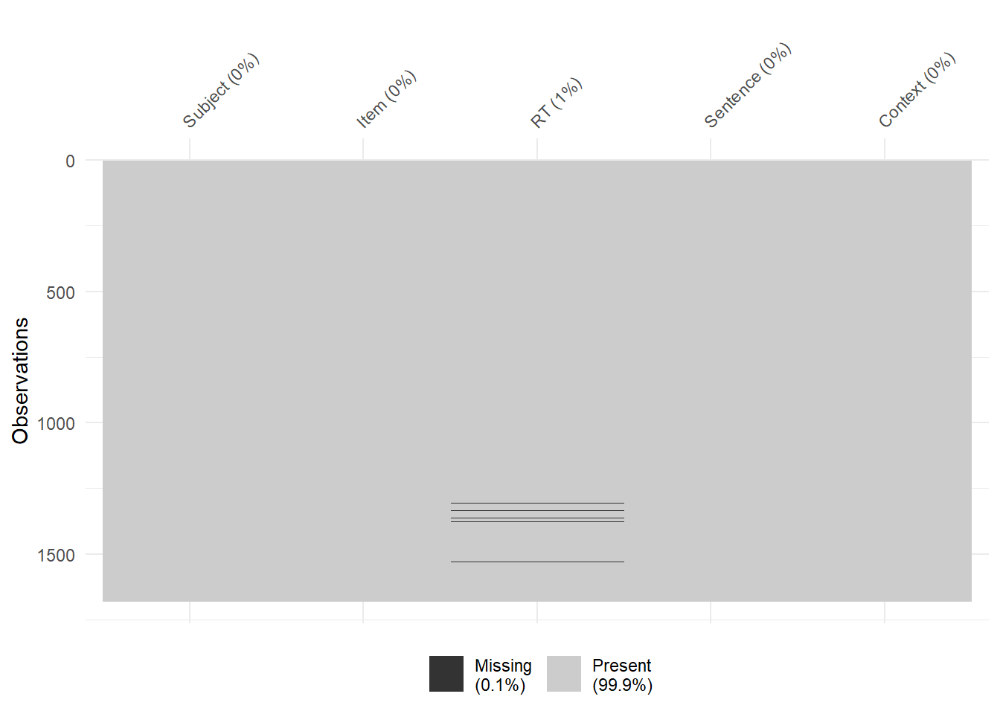
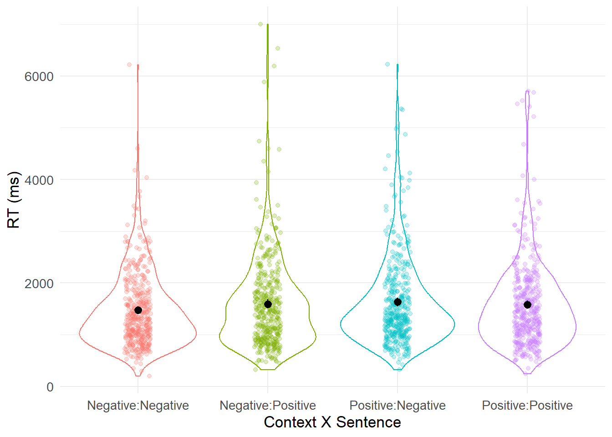

Chapter 8 一般线性模型 - 方差分析第 1 部分
在本次研讨会中，我们将在 R 模型构建的背景下探索参与者设计、重复测量设计和因子设计之间的方差分析 (ANOVA)。 您将学习如何使用 {afex} 包构建具有 III 型平方和的模型，以及如何使用{emmeans} 包进行后续测试以探索主效应和相互作用。
概述
在本次研讨会中，我们将研究如何在 R 中进行方差分析 (ANOVA)。我们将首先探讨为什么我们倾向于使用 ANOVA（而不是多个t检验），然后继续讨论参与者之间的 ANOVA 的一些示例重复测量设计。
参与者之间的方差分析（Between Participants ANOVA）
在第二个视频中，我将向您展示如何使用{afex}包在 R 中构建参与者之间的方差分析模型。
观看完上面的视频后，就轮到您在 R 中为参与者之间的设计构建您的第一个方差分析了。请按照以下说明构建该模型。
加载我们的包
首先，我们需要加载我们将使用的三个包 - 它们是{tidyverse} 、 {afex}和{emmeans} 。 {afex}包是我们用于进行多因子方差分析（factorial ANOVA）的包。 我们使用{emmeans}包对我们将要构建的 ANOVA 模型运行后续测试。
读取我们的数据
我们有 45 名参与者参与参与者之间的设计，我们感兴趣的是饮用的饮料对运动任务能力的影响。 我们的实验因素（饮料类型）有 3 个级别。 这些是水与单份浓缩咖啡与双份浓缩咖啡，而能力是我们在连续范围内测量的 DV。 让我们读入我们的数据。数据可以在这里下载
## # A tibble: 6 × 3
## Participant Condition Ability
## <dbl> <chr> <dbl>
## 1 1 Water 4.82
## 2 2 Water 5.41
## 3 3 Water 5.73
## 4 4 Water 4.36
## 5 5 Water 5.47
## 6 6 Water 5.50我们看到我们有三个变量，但是我们的实验变量Condition没有被编码为因子。 让我们解决这个问题…
## # A tibble: 6 × 3
## Participant Condition Ability
## <dbl> <fct> <dbl>
## 1 1 Water 4.82
## 2 2 Water 5.41
## 3 3 Water 5.73
## 4 4 Water 4.36
## 5 5 Water 5.47
## 6 6 Water 5.50总结我们的数据
接下来让我们进行一些汇总统计并构建数据可视化。
## # A tibble: 3 × 3
## Condition mean sd
## <fct> <dbl> <dbl>
## 1 Double Espresso 8.89 0.467
## 2 Single Espresso 6.99 0.419
## 3 Water 5.17 0.362可视化我们的数据
set.seed(1234)
my_data_tidied %>%
ggplot(aes(x = Condition, y = Ability, colour = Condition)) +
geom_violin() +
geom_jitter(width = .1) +
guides(colour = FALSE) +
stat_summary(fun.data = "mean_cl_boot", colour = "black") +
theme_minimal() +
theme(text = element_text(size = 13)) ## Warning: The `<scale>` argument of `guides()` cannot be `FALSE`. Use "none" instead as
## of ggplot2 3.3.4.
## This warning is displayed once every 8 hours.
## Call `lifecycle::last_lifecycle_warnings()` to see where this warning was
## generated.
我们构建了一个可视化，其中使用geom_jitter()函数绘制了原始数据点，并使用geom_violin()函数绘制了每个条件的分布形状。 我们还使用stat_summary()函数以平均值和平均值附近的置信区间的形式添加了一些汇总数据。
建立我们的方差分析模型
现在让我们使用{afex}包中的aov_4()函数构建模型。 aov_4()中方差分析模型的语法为： aov_4(DV ~ IV + (1 | Participant), data = my_data_tidied)。 ~符号表示由(1 | Participant)项预测，对应于我们的随机效应 - 我们显然无法测试世界上的所有参与者，因此仅从该群体中随机抽取样本。 最后，我们需要通过在模型的data = my_data_tidied位中明确说明我们正在使用的数据集。 我们将把aov()函数的输出映射到我称之为model变量上。 这意味着方差分析结果将存储在该变量中，并允许我们稍后访问它们。
## Contrasts set to contr.sum for the following variables: Condition为了获得方差分析的输出，我们可以将summary()函数与我们新创建的model结合使用。
解释模型输出
## Anova Table (Type 3 tests)
##
## Response: Ability
## num Df den Df MSE F ges Pr(>F)
## Condition 2 42 0.17484 297.05 0.93397 < 2.2e-16 ***
## ---
## Signif. codes: 0 '***' 0.001 '**' 0.01 '*' 0.05 '.' 0.1 ' ' 1效应大小 (ges) 是广义 eta 平方，对于具有多个因子的设计，它可以作为一个有用的指标，表明每个因子（加上因子之间的任何相互作用）可以解释因变量的方差有多少。
因此，我们的模型存在影响 - F 值相当大， p值相当小），但我们尚不知道是什么导致了差异。 我们需要使用emmeans()函数进行一些成对比较，以告诉我们哪些平均值与其他平均值不同。
## $emmeans
## Condition emmean SE df lower.CL upper.CL
## Double Espresso 8.89 0.108 42 8.67 9.10
## Single Espresso 6.99 0.108 42 6.77 7.20
## Water 5.17 0.108 42 4.95 5.38
##
## Confidence level used: 0.95
##
## $contrasts
## contrast estimate SE df t.ratio p.value
## Double Espresso - Single Espresso 1.90 0.153 42 12.453 <.0001
## Double Espresso - Water 3.72 0.153 42 24.372 <.0001
## Single Espresso - Water 1.82 0.153 42 11.920 <.0001
##
## P value adjustment: tukey method for comparing a family of 3 estimates请注意，多重比较的默认调整是 Tukey 的调整。 我们可以通过向模型添加额外参数来改变这一点，例如adjust = “bonferonni”) 。 在这种情况下，它对我们的比较没有任何影响。
## $emmeans
## Condition emmean SE df lower.CL upper.CL
## Double Espresso 8.89 0.108 42 8.67 9.10
## Single Espresso 6.99 0.108 42 6.77 7.20
## Water 5.17 0.108 42 4.95 5.38
##
## Confidence level used: 0.95
##
## $contrasts
## contrast estimate SE df t.ratio p.value
## Double Espresso - Single Espresso 1.90 0.153 42 12.453 <.0001
## Double Espresso - Water 3.72 0.153 42 24.372 <.0001
## Single Espresso - Water 1.82 0.153 42 11.920 <.0001
##
## P value adjustment: bonferroni method for 3 tests我们发现饮料类型有显着影响（F (2,42) = 297.05， p < .001，广义 η2 = .93）。 Tukey 比较显示，水组的表现显着差于单份浓缩咖啡组 ( p < .001)，水组的表现显着差于双份浓缩咖啡组 ( p < .001)，单份浓缩咖啡组的表现显着较差高于 Double Espresso 组 ( p < .001)。
换句话说，相对于喝水，喝一些咖啡可以提高运动表现，而喝大量咖啡可以更好地提高运动表现。3
重复测量方差分析
假设我们有一个实验，要求 32 名参与者学习如何发音不同复杂程度的单词 - Very Easy、Easy、Hard 和 Very Hard。 他们在最初接触阶段就看到了这些词。 休息 30 分钟后，我们对参与者进行了测试，要求他们在计算机屏幕上出现单词时大声说出这些单词。 我们以秒为单位记录了他们的时间。 我们想知道他们对于每个单词复杂程度的响应时间是否存在差异。
读取我们的数据
首先我们读入数据。数据可以在这里下载
## # A tibble: 6 × 3
## Participant Condition RT
## <dbl> <chr> <dbl>
## 1 1 Very Easy 1.25
## 2 2 Very Easy 1.16
## 3 3 Very Easy 1.12
## 4 4 Very Easy 1.33
## 5 5 Very Easy 1.16
## 6 6 Very Easy 1.15我们可以从head()函数中看到 Condition 尚未被编码为因子。 让我们解决这个问题。
## # A tibble: 6 × 3
## Participant Condition RT
## <dbl> <fct> <dbl>
## 1 1 Very Easy 1.25
## 2 2 Very Easy 1.16
## 3 3 Very Easy 1.12
## 4 4 Very Easy 1.33
## 5 5 Very Easy 1.16
## 6 6 Very Easy 1.15总结我们的数据
让我们为四个条件中的每一个生成平均值和标准差。
## # A tibble: 4 × 3
## Condition mean sd
## <fct> <dbl> <dbl>
## 1 Easy 1.23 0.0610
## 2 Hard 1.39 0.118
## 3 Very Easy 1.20 0.0511
## 4 Very Hard 1.87 0.187可视化我们的数据
并可视化数据 - 请注意，这里我使用fct_reorder()函数根据 RT 重新排序因子的级别。 这对于使我们的可视化更容易解释很有用。
rm_data_tidied %>%
ggplot(aes(x = fct_reorder(Condition, RT), y = RT, colour = Condition)) +
geom_violin() +
geom_jitter(width = .1) +
guides(colour = FALSE) +
stat_summary(fun.data = "mean_cl_boot", colour = "black") +
theme_minimal() +
theme(text = element_text(size = 13)) +
labs(x = "Condition", y = "RT (s)")
建立我们的方差分析模型
我们以与之前类似的方式构建方差分析模型。 除了在这种情况下，我们的随机效应定义为(1 + Condition | Participant)。 我为了捕捉我们的Condition是重复测量因素这一事实，我们将其添加到随机效应项中，如下所示。
解释模型输出
我们以与参与者之间方差分析相同的方式提取模型的摘要。
##
## Univariate Type III Repeated-Measures ANOVA Assuming Sphericity
##
## Sum Sq num Df Error SS den Df F value Pr(>F)
## (Intercept) 259.07 1 0.50313 31 15962.33 < 2.2e-16 ***
## Condition 9.27 3 1.20624 93 238.23 < 2.2e-16 ***
## ---
## Signif. codes: 0 '***' 0.001 '**' 0.01 '*' 0.05 '.' 0.1 ' ' 1
##
##
## Mauchly Tests for Sphericity
##
## Test statistic p-value
## Condition 0.38404 3.0211e-05
##
##
## Greenhouse-Geisser and Huynh-Feldt Corrections
## for Departure from Sphericity
##
## GG eps Pr(>F[GG])
## Condition 0.65596 < 2.2e-16 ***
## ---
## Signif. codes: 0 '***' 0.001 '**' 0.01 '*' 0.05 '.' 0.1 ' ' 1
##
## HF eps Pr(>F[HF])
## Condition 0.7000534 3.359493e-31使用此方式，我们没有在我们的测量中获得效应大小测量值。 不过，我们可以通过使用anova()函数要求我们的模型以 anova 格式呈现来生成它。
## Anova Table (Type 3 tests)
##
## Response: RT
## num Df den Df MSE F ges Pr(>F)
## Condition 1.9679 61.004 0.019773 238.23 0.84431 < 2.2e-16 ***
## ---
## Signif. codes: 0 '***' 0.001 '**' 0.01 '*' 0.05 '.' 0.1 ' ' 1效应大小通过 ges 来测量，是重复测量设计的推荐效应大小测量（Bakeman，2005）。 请注意，此输出中的 dfs 始终会被纠正，就好像违反了球形度（当所有可能的受试者内条件对（即自变量的水平）之间的差异的方差不相等时，就会违反球形度） - 为保守的（为了避免 I 类错误）我们最好总是选择这些修正后的 dfs。
从这里我们可以看出我们有Condition的效果。 但我们不知道我们的因素的不同水平之间的差异在哪里。 所以我们使用emmeans()函数来找出答案。 在这里，我们将使用 Bonferroni 校正进行多重比较。
## $emmeans
## Condition emmean SE df lower.CL upper.CL
## Easy 1.23 0.01079 31 1.21 1.25
## Hard 1.39 0.02085 31 1.35 1.43
## Very.Easy 1.20 0.00904 31 1.18 1.22
## Very.Hard 1.87 0.03302 31 1.80 1.94
##
## Confidence level used: 0.95
##
## $contrasts
## contrast estimate SE df t.ratio p.value
## Easy - Hard -0.1633 0.0226 31 -7.225 <.0001
## Easy - Very.Easy 0.0285 0.0143 31 1.986 0.3353
## Easy - Very.Hard -0.6430 0.0338 31 -19.014 <.0001
## Hard - Very.Easy 0.1917 0.0230 31 8.354 <.0001
## Hard - Very.Hard -0.4797 0.0363 31 -13.220 <.0001
## Very.Easy - Very.Hard -0.6715 0.0341 31 -19.710 <.0001
##
## P value adjustment: bonferroni method for 6 tests从上面我们可以看到，除了“Easy ”与“ Very Easy”的比较不重要之外，所有条件都不同于所有其他条件。
多因子方差分析（factorial ANOVA）
读取我们的数据
数据可以在这里下载
## # A tibble: 6 × 5
## Subject Item RT Sentence Context
## <dbl> <dbl> <dbl> <chr> <chr>
## 1 1 3 1270 Positive Negative
## 2 1 7 739 Positive Negative
## 3 1 11 982 Positive Negative
## 4 1 15 1291 Positive Negative
## 5 1 19 1734 Positive Negative
## 6 1 23 1757 Positive Negative我们再次看到我们的两个实验因素没有被编码为因素，所以让我们解决这个问题。
factorial_data_tidied <- factorial_data %>%
mutate(Sentence = factor(Sentence), Context = factor(Context))
head(factorial_data_tidied)## # A tibble: 6 × 5
## Subject Item RT Sentence Context
## <dbl> <dbl> <dbl> <fct> <fct>
## 1 1 3 1270 Positive Negative
## 2 1 7 739 Positive Negative
## 3 1 11 982 Positive Negative
## 4 1 15 1291 Positive Negative
## 5 1 19 1734 Positive Negative
## 6 1 23 1757 Positive Negative总结我们的数据
让我们生成一些汇总统计数据 - 请注意，我们在group_by()函数调用中指定了两个分组变量。
factorial_data_tidied %>%
group_by(Context, Sentence) %>%
summarise(mean_rt = mean(RT), sd_rt = sd(RT))## `summarise()` has grouped output by 'Context'. You can override using the
## `.groups` argument.## # A tibble: 4 × 4
## # Groups: Context [2]
## Context Sentence mean_rt sd_rt
## <fct> <fct> <dbl> <dbl>
## 1 Negative Negative 1474. 729.
## 2 Negative Positive NA NA
## 3 Positive Negative NA NA
## 4 Positive Positive 1579. 841.我们有两个数据为NA ，表明我们的数据集中某处缺少数据。 我们现在将使用一个名为{visdat}的新包。 它允许我们使用vis_dat()函数可视化我们的数据集，并使用vis_miss()函数可视化丢失的数据。

我们可以在上面的可视化中看到我们确实有一些丢失的数据。 我们需要告诉 R 我们希望它做什么。 我们可以使用na.rm = TRUE参数告诉它我们希望忽略丢失的数据。
factorial_data_tidied %>%
group_by(Context, Sentence) %>%
summarise(mean_rt = mean(RT, na.rm = TRUE), sd_rt = sd(RT, na.rm = TRUE))## `summarise()` has grouped output by 'Context'. You can override using the
## `.groups` argument.## # A tibble: 4 × 4
## # Groups: Context [2]
## Context Sentence mean_rt sd_rt
## <fct> <fct> <dbl> <dbl>
## 1 Negative Negative 1474. 729.
## 2 Negative Positive 1595. 887.
## 3 Positive Negative 1633. 877.
## 4 Positive Positive 1579. 841.现在我们有了我们期望的汇总统计数据。
可视化我们的数据
我们可以使用上面使用的ggplot()代码的修改来生成可视化。 请注意，在开始绘图之前，我正在使用filter()函数过滤丢失的数据。 我还指定我们希望使用Context:Sentence在aes()定义中绘制两个因素的组合。 我们还可以修改更多内容来改善该图的外观。 您能找出使这两个因素的标签更清晰的方法吗？
factorial_data_tidied %>%
filter(!is.na(RT)) %>%
ggplot(aes(x = Context:Sentence, y = RT, colour = Context:Sentence)) +
geom_violin() +
geom_jitter(width = .1, alpha = .25) +
guides(colour = FALSE) +
stat_summary(fun.data = "mean_cl_boot", colour = "black") +
theme_minimal() +
theme(text = element_text(size = 13)) +
labs(x = "Context X Sentence", y = "RT (ms)")
建立我们的方差分析模型
我们的数据采用长格式，其中每一行都是一个观察结果。 我们还没有进行任何数据聚合。 aov_4()函数将为我们执行此操作，因为方差分析模型需要基于均值（而不是原始数据）构建。 由于数据尚未聚合，我们实际上可以使用当前格式的数据构建两个方差分析模型。 我们可以构建一个方差分析，将受试者视为随机效应（也称为 F1 方差分析），并构建另一个方差分析，将项目视为随机因素（也称为 F2 方差分析）。 在语言研究中，进行这两种类型的分析是很常见的。 逐项目 (F2) 分析使我们能够确保我们可能发现的任何影响不仅限于实验项目的子集。
首先，我们将了解如何使用aov_4()为我们的因子设计运行按主题方差分析。 语法与我们之前运行的非常相似，尽管这次您会看到我们有一个新术语Context * Sentence 。 该术语对应于两个主要效应，以及它们之间的相互作用。 它是Context + Sentence + Context:Sentence的简写。 我们还在随机效应中指定了这一点通过将na.rm设置为 TRUE，我们告诉分析忽略可能丢失数据的个别试验 - 这有效地计算了存在数据的条件均值（并忽略了其中的试验）它丢失了）。
model_subjects <- aov_4(RT ~ Context * Sentence + (1 + Context * Sentence | Subject), data = factorial_data_tidied, na.rm = TRUE)## Warning: More than one observation per design cell, aggregating data using `fun_aggregate = mean`.
## To turn off this warning, pass `fun_aggregate = mean` explicitly.我们可以像之前一样使用anova()函数生成输出。
## Anova Table (Type 3 tests)
##
## Response: RT
## num Df den Df MSE F ges Pr(>F)
## Context 1 59 90195 3.1767 0.0060231 0.07984 .
## Sentence 1 59 124547 0.6283 0.0016524 0.43114
## Context:Sentence 1 59 93889 4.5967 0.0090449 0.03616 *
## ---
## Signif. codes: 0 '***' 0.001 '**' 0.01 '*' 0.05 '.' 0.1 ' ' 1如果我们想生成 F2 方差分析（按项目），我们只需更改随机效应，使其按项目而不是按受试者计算。
model_items <- aov_4(RT ~ Context * Sentence + (1 + Context * Sentence | Item), data = factorial_data_tidied, na.rm = TRUE)## Warning: More than one observation per design cell, aggregating data using `fun_aggregate = mean`.
## To turn off this warning, pass `fun_aggregate = mean` explicitly.## Anova Table (Type 3 tests)
##
## Response: RT
## num Df den Df MSE F ges Pr(>F)
## Context 1 27 39844 4.0013 0.0080150 0.05561 .
## Sentence 1 27 203164 0.1221 0.0012553 0.72951
## Context:Sentence 1 27 40168 5.7687 0.0116070 0.02346 *
## ---
## Signif. codes: 0 '***' 0.001 '**' 0.01 '*' 0.05 '.' 0.1 ' ' 1您可以看到 F1 和 F2 分析都产生相似的结果。
现在让我们将我们的方差分析解释为我们的随机效应。 我们将误差修正调整为none ，因为只有一些比较实际上具有理论上的意义 - 这些是我们进行同类比较的地方 - 相同类型的句子（正面或负面）前面有一个版本的上下文因素与其他因素的比较。
## $emmeans
## Context Sentence emmean SE df lower.CL upper.CL
## Negative Negative 1474 51.1 59 1372 1576
## Positive Negative 1628 58.9 59 1510 1746
## Negative Positive 1595 56.5 59 1482 1708
## Positive Positive 1579 63.9 59 1451 1707
##
## Confidence level used: 0.95
##
## $contrasts
## contrast estimate SE df t.ratio p.value
## Negative Negative - Positive Negative -153.9 50.0 59 -3.075 0.0032
## Negative Negative - Negative Positive -120.9 63.4 59 -1.908 0.0612
## Negative Negative - Positive Positive -105.2 53.5 59 -1.966 0.0540
## Positive Negative - Negative Positive 33.0 65.5 59 0.503 0.6165
## Positive Negative - Positive Positive 48.7 57.1 59 0.852 0.3976
## Negative Positive - Positive Positive 15.7 60.3 59 0.261 0.7953关键的比较是Negative Negative - Positive Negative和Negative Positive - Positive Positive比较。 在第一种情况下，我们将反应时间与前面有消极与积极语境的消极句子进行比较，而在第二种情况下，我们将反应时间与前面有消极与积极语境的积极句子进行比较。 我们可以通过将相应的p值乘以 2（并对可能的最大p值限制为 1）来手动纠正多重比较（在本例中为 2）。 在这种情况下，第一个关键比较很重要 ( p = .0064)，而第二个则不重要。 我们可能会写出这样的结果：
我们进行了 2（上下文：正与负）x 2（句子：正与负）重复测量方差分析，以研究上下文效价对正价或负价句子的反应时间的影响。 方差分析显示句子没有影响 (F < 1)，上下文没有影响 (F(1, 59) = 3.18, p = .080, ηG2 = .006)，但句子和上下文之间存在交互作用 (F(1, 59) = 4.60， p = .036，ηG2 = .009)。
通过进行 Bonferroni 校正的成对同伴来解释相互作用。 这些比较表明，交互是由否定句子在否定上下文中处理速度更快（1,474 毫秒 vs. 1,628 毫秒，t(118) = 3.08， p = .0064）驱动的，而正面句子的阅读速度相似在消极与积极情境中（1,595 毫秒与 1,579 毫秒，t(118) = .261， p = 1）。
作业
现在希望你自己解决以下问题。
问题1
我们的第一个数据文件名为 ANOVA_data1.csv，可以在此处找到：
24 名参与者对常见（即高词汇频率，high lexical frequency）或罕见（即低词汇频率，low lexical frequency）的单词进行了回答。 这是我们的 IV，编码为“high”与“ low”。 我们的 DV 是反应时间（reaction time），编码为“RT”。 被试编号（Subject number）编码为“Subject”。 我们想知道条件之间是否存在差异（如果有，差异在哪里）。 可视化数据、生成描述性并运行适当的方差分析以确定我们的自变量（Condition）是否对因变量 (RT) 有影响。
问题2
我们的第二个数据文件名为 ANOVA_data2.csv，可以在此处找到：
这些数据也来自反应时间实验，但设计稍微复杂一些。48 名参与者对一个词的反应频率有所不同。 这个因素是参与者之间的因素(between participants)，我们有四个级别，编码为“very low”、“low”、“high”和“very high”。 我们的 DV 是反应时间，编码为“RT”。 被试编号编码为“Subject”。 我们想知道我们的条件(condition)是否存在差异（如果有，差异在哪里）。
问题3
我们的第三个数据文件称为 ANOVA_data3.csv，可以在此处找到：
这些数据来自 2 x 2 重复测量反应时间实验。 我们感兴趣的是参与者对大图像与小图像、彩色图像与黑白图像的反应速度。 我们预计大彩色图像的响应速度将比小黑白图像的响应速度更快。 我们不确定小彩色图像和大黑白图像。 我们测量了 24 名参与者在这四种情况下对图像的反应时间。 我们想要确定我们的条件是否存在差异（如果有，差异在哪里）。
问题4
我们的第四个数据文件称为 ANOVA_data4.csv，可以在此处找到：
这些数据来自 2 x 2 x 3 混合设计实验，我们测量了人们对简单或困难的数学问题的反应时间，以及他们必须在时间压力或无时间压力下做出反应的时间。 这是我们的前两个因素，并且是重复测量（即，每个人都看到了所有 4 个条件）。 我们的第三个因素是受试者之间的因素，对应于我们的参与者是否属于三组之一。 这些小组是心理学学生、数学学生和艺术学生。 我们想知道参与者在时间压力下和没有时间压力下在数学问题上的表现受到他们属于这三个组中哪一组的影响。 进行适当的方差分析来回答这个问题。 请记住从一些数据可视化开始。
答案
问题1
方差分析应揭示为 F(1, 22) = 91.217 。 由于我们的因素只有两个水平，因此我们不需要运行任何后续测试来了解是什么推动了这种效果。 通过查看描述性统计数据，我们发现high条件下的 RT 为 865， low条件下的 RT 为 1178。
问题3
方差分析应揭示Size的主效应 (F(1, 23) = 198.97)、Colour的主效应 (F(1, 23) = 524.27) 以及这两个因素之间的交互作用 (F(1, 23) = 11.08）。 为了进一步解释这种相互作用，我们需要进行后续比较。 使用 Bonferroni 校正，这些应该表明每个条件级别都不同于其他级别。
问题4
这个问题比我们迄今为止看到的问题稍微棘手一些。 构建方差分析后（请记住仅将重复测量因子添加到随机效应项中），您将发现显着的三向交互作用 (F(2, 69) = 4.63）。 您需要进一步细分 - 一种可能的方法是针对组间因素的每个级别分别查看难度和时间压力之间的相互作用。 换句话说，您将为每个学生组构建一个 2 x 2 方差分析模型。 如果这样做，您会发现 2 x 2 交互对于艺术组和数学组都不显着，但对于心理学组显着 (F(1, 23) = 11.08)） - 如下所示难度和时间压力也是两个主要影响。 但当这两个因素相互作用时，我们数据中的含义在于相互作用项（而不仅仅是这两个主效应）。
因此，三向交互告诉我们，至少有一个组的双向交互是不同的（相对于其他组）。 我们需要通过进行成对比较来为我们的心理学小组进一步检查这种双向互动，正如您在上面所做的那样。 这将揭示，对于我们的心理学小组来说，每种情况都与其他情况显着不同。 这意味着对于心理学学生来说，困难问题在时间压力下比在无时间压力下需要更长的时间，而简单问题在时间压力下比在无时间压力下需要更长的时间（但这些都没有困难问题那么长） 。
编者注：不构成医学建议↩︎